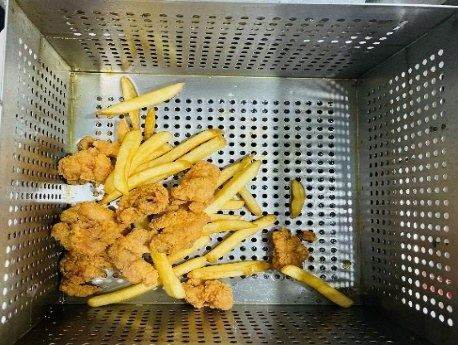
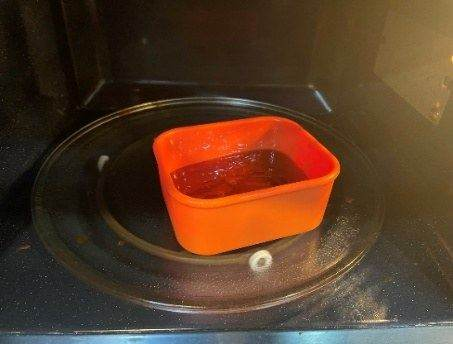
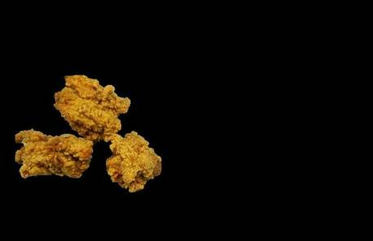
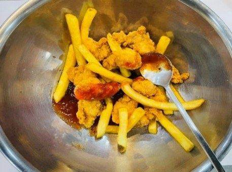
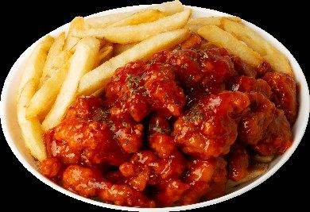

| 메뉴명 | 촉촉 양념 치킨 |
|---|---|
| 판매가격 | 9,900원 |
| 원재료 | 아이센스순살치킨, 감자튀김, 파슬리, 양념치킨소스 |
| 사용 부자재 | 덮밥접시 |
| 메뉴특징 | 새콤달콤 양념과 부드러운 순살의 만남! 후라이드 치킨의 영원한 라이벌 양념 치킨 |
조리방법

1
180도 튀김기에 포션한 순살치킨 1봉(250g)을 넣고 1분간 먼저 튀긴다.
180도 튀김기에 포션한 순살치킨 1봉(250g)을 넣고 1분간 먼저 튀긴다.

2
포션한 감자튀김 2봉(160g)을 튀김기에 넣어 4분간 함께 튀겨낸다.
포션한 감자튀김 2봉(160g)을 튀김기에 넣어 4분간 함께 튀겨낸다.

3
전자레인지 용기에
양념치킨 150g을 계량하여 넣고 1분간 돌린다.
전자레인지 용기에
양념치킨 150g을 계량하여 넣고 1분간 돌린다.

4
튀김 기름 제거 후, 믹싱볼에 치킨과 데운소스를 넣고 골고루 버무린다.
튀김 기름 제거 후, 믹싱볼에 치킨과 데운소스를 넣고 골고루 버무린다.

5
접시에 유산지를 깔고 한쪽에 감자튀김을 먼저 담아준다.
접시에 유산지를 깔고 한쪽에 감자튀김을 먼저 담아준다.

6
남은 공간에 치킨을 담고 파슬리를 뿌려 제공한다.
남은 공간에 치킨을 담고 파슬리를 뿌려 제공한다.
※ 튀김시간
순살치킨 5분/ 감자튀김 4분